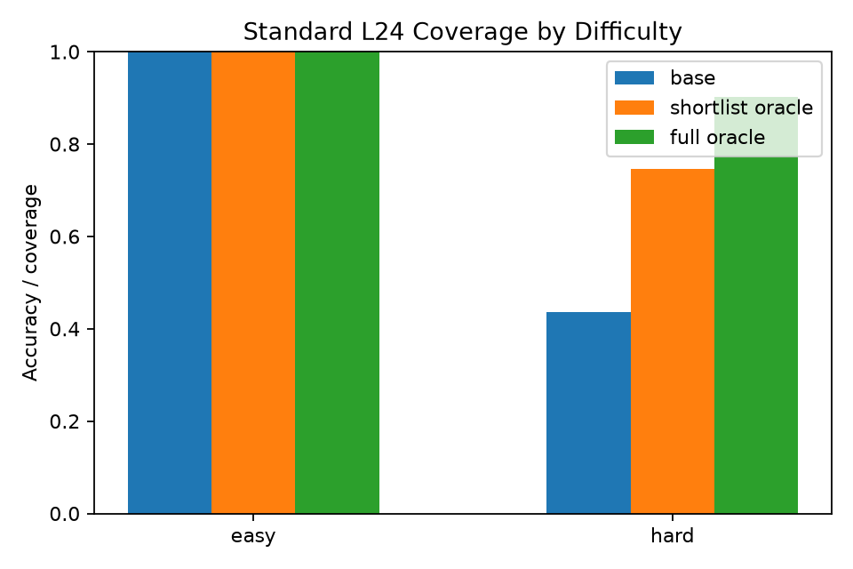
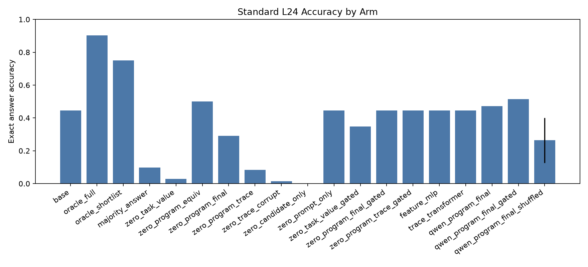
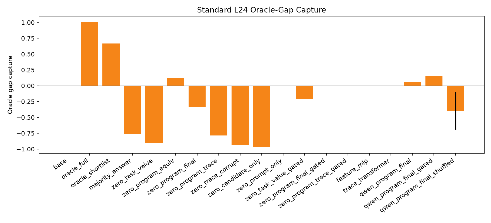
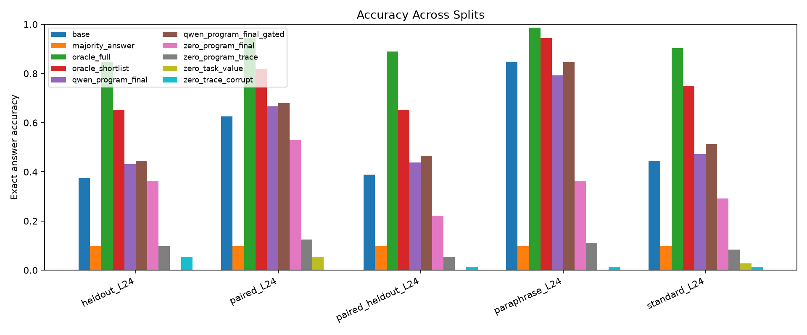

This standalone experiment tests whether a Qwen reader can select executable repair candidates when the task and candidate are rendered as readable pseudocode, claimed final values, and optional execution traces. Learned selectors are trained only from offline labels; at inference they do not receive the target answer or target state.
On standard_L24, the best non-oracle selector was qwen_program_final_gated at 51.4% accuracy and 15.2% oracle-gap capture versus 44.4% for no repair.
The best mean ranking AUC on standard_L24 was feature_mlp at 0.799.
Frozen program-equivalence reading reached 50.0% accuracy with AUC 0.677; adding full trace text dropped to 8.3% with AUC 0.620, while corrupted trace dropped to 1.4% with AUC 0.486.
• Base reader: `Qwen/Qwen3-4B`.
• Candidate shortlist size: `64`.
• Held-out source seed: `789`.
• Train groups per non-held-out source: `32`; validation groups per non-held-out source: `12`; eval groups per source/split: `24`.
• Frozen readable modes: `task_value,program_equiv,program_final,program_trace,trace_corrupt,candidate_only,prompt_only`.
• Trained Qwen head modes: `program_final`.
Selectors:
• `base`: no repair.
• `oracle_full`: best answer-correct candidate in the full candidate pool.
• `oracle_shortlist`: best answer-correct candidate in the deployable shortlist.
• `majority_answer`: chooses the most common claimed final value in the shortlist.
• `zero_task_value`: frozen Qwen reads the task program and scores candidates by the logit of each candidate's claimed final value.
• `zero_program_equiv`: frozen Qwen reads task program and candidate program, then answers whether they return the same value.
• `zero_program_final`: frozen Qwen reads task program, candidate program, and candidate claimed final value.
• `zero_program_trace`: frozen Qwen also receives a readable execution trace.
• `zero_trace_corrupt`: same as trace mode but with corrupted state order.
• `qwen_<mode>`: learned groupwise ranking head over frozen Qwen embeddings for that readable mode.
• `_gated`: validation-tuned base fallback for the corresponding score.
• Additional controls: prompt-only, candidate-only, feature-only, trace-only, and shuffled-label arms.
| split | groups | avg_full_candidates | avg_shortlist | avg_target_answer_count | avg_target_answer_margin | base_accuracy | shortlist_oracle_accuracy | full_oracle_accuracy | shortlist_oracle_capture |
|---|---|---|---|---|---|---|---|---|---|
| heldout_L24 | 72 | 177 | 64 | 1.208 | -2.667 | 37.5% | 65.3% | 84.7% | 77.0% |
| paired_L24 | 72 | 177 | 64 | 1.222 | -2.222 | 62.5% | 81.9% | 94.4% | 86.8% |
| paired_heldout_L24 | 72 | 177 | 64 | 1.042 | -2.444 | 38.9% | 65.3% | 88.9% | 73.4% |
| paraphrase_L24 | 72 | 177 | 64 | 1.75 | -1.861 | 84.7% | 94.4% | 98.6% | 95.8% |
| standard_L24 | 72 | 177 | 64 | 1.431 | -2.472 | 44.4% | 75.0% | 90.3% | 83.1% |
| train_mixed_L24 | 64 | 177 | 64 | 1.75 | -1.75 | 81.2% | 96.9% | 100.0% | 96.9% |
| val_mixed_L24 | 24 | 177 | 64 | 1.167 | -2.583 | 75.0% | 83.3% | 91.7% | 90.9% |


| arm | mean_accuracy | mean_gap_capture | mean_auc | mean_changed | mean_damage | mean_recovery |
|---|---|---|---|---|---|---|
| base | 44.4% | 0.0% | n/a | 0 | 0 | 0 |
| feature_mlp | 44.4% | 0.0% | 0.799 | 0 | 0 | 0 |
| majority_answer | 9.7% | -75.8% | n/a | 0.875 | 0.781 | 0 |
| oracle_full | 90.3% | 100.0% | n/a | 0.458 | 0 | 0.825 |
| oracle_shortlist | 75.0% | 66.7% | n/a | 0.306 | 0 | 0.55 |
| qwen_program_final | 47.2% | 6.1% | 0.669 | 0.569 | 0.094 | 0.125 |
| qwen_program_final_gated | 51.4% | 15.2% | 0.669 | 0.299 | 0 | 0.125 |
| qwen_program_final_shuffled | 26.4% | -39.4% | 0.662 | 0.771 | 0.516 | 0.087 |
| trace_transformer | 44.4% | 0.0% | 0.689 | 0 | 0 | 0 |
| zero_candidate_only | 0.0% | -97.0% | 0.477 | 1 | 1 | 0 |
| zero_candidate_only_gated | 36.1% | -18.2% | 0.477 | 0.139 | 0.188 | 0 |
| zero_program_equiv | 50.0% | 12.1% | 0.677 | 0.486 | 0 | 0.1 |
| zero_program_equiv_gated | 50.0% | 12.1% | 0.677 | 0.486 | 0 | 0.1 |
| zero_program_final | 29.2% | -33.3% | 0.648 | 0.694 | 0.406 | 0.05 |
| zero_program_final_gated | 44.4% | 0.0% | 0.648 | 0.056 | 0.031 | 0.025 |
| zero_program_trace | 8.3% | -78.8% | 0.620 | 0.917 | 0.906 | 0.075 |
| zero_program_trace_gated | 44.4% | 0.0% | 0.620 | 0 | 0 | 0 |
| zero_prompt_only | 44.4% | 0.0% | 0.500 | 0 | 0 | 0 |
| zero_prompt_only_gated | 44.4% | 0.0% | 0.500 | 0 | 0 | 0 |
| zero_task_value | 2.8% | -90.9% | 0.462 | 0.972 | 0.938 | 0 |
| zero_task_value_gated | 34.7% | -21.2% | 0.462 | 0.139 | 0.219 | 0 |
| zero_trace_corrupt | 1.4% | -93.9% | 0.486 | 1 | 0.969 | 0 |
| zero_trace_corrupt_gated | 44.4% | 0.0% | 0.486 | 0.028 | 0 | 0 |


| difficulty | arm | seed | n | accuracy | gap_capture | ranking_auc | changed_fraction | damage_rate | recovery_rate |
|---|---|---|---|---|---|---|---|---|---|
| easy | base | -1 | 1 | 100.0% | n/a | n/a | 0.0% | 0.0% | n/a |
| hard | base | -1 | 71 | 43.7% | 0.0% | n/a | 0.0% | 0.0% | 0.0% |
| easy | oracle_shortlist | -1 | 1 | 100.0% | n/a | n/a | 0.0% | 0.0% | n/a |
| hard | oracle_shortlist | -1 | 71 | 74.6% | 66.7% | n/a | 31.0% | 0.0% | 55.0% |
| easy | majority_answer | -1 | 1 | 100.0% | n/a | n/a | 0.0% | 0.0% | n/a |
| hard | majority_answer | -1 | 71 | 8.5% | -75.8% | n/a | 88.7% | 80.6% | 0.0% |
| easy | zero_task_value | -1 | 1 | 0.0% | n/a | 0.220 | 100.0% | 100.0% | n/a |
| hard | zero_task_value | -1 | 71 | 2.8% | -87.9% | 0.467 | 97.2% | 93.5% | 0.0% |
| easy | zero_program_final | -1 | 1 | 100.0% | n/a | 0.763 | 0.0% | 0.0% | n/a |
| hard | zero_program_final | -1 | 71 | 28.2% | -33.3% | 0.646 | 70.4% | 41.9% | 5.0% |
| easy | zero_program_trace | -1 | 1 | 0.0% | n/a | 0.780 | 100.0% | 100.0% | n/a |
| hard | zero_program_trace | -1 | 71 | 8.5% | -75.8% | 0.617 | 91.5% | 90.3% | 7.5% |
| easy | zero_trace_corrupt | -1 | 1 | 0.0% | n/a | 0.819 | 100.0% | 100.0% | n/a |
| hard | zero_trace_corrupt | -1 | 71 | 1.4% | -90.9% | 0.480 | 100.0% | 96.8% | 0.0% |
| easy | qwen_program_final | 101 | 1 | 100.0% | n/a | 0.715 | 0.0% | 0.0% | n/a |
| hard | qwen_program_final | 101 | 71 | 46.5% | 6.1% | 0.670 | 57.7% | 9.7% | 12.5% |
| easy | qwen_program_final_gated | 101 | 1 | 100.0% | n/a | 0.715 | 0.0% | 0.0% | n/a |
| hard | qwen_program_final_gated | 101 | 71 | 50.7% | 15.2% | 0.670 | 29.6% | 0.0% | 12.5% |
| easy | qwen_program_final | 202 | 1 | 100.0% | n/a | 0.722 | 0.0% | 0.0% | n/a |
| hard | qwen_program_final | 202 | 71 | 46.5% | 6.1% | 0.666 | 57.7% | 9.7% | 12.5% |
| easy | qwen_program_final_gated | 202 | 1 | 100.0% | n/a | 0.722 | 0.0% | 0.0% | n/a |
| hard | qwen_program_final_gated | 202 | 71 | 50.7% | 15.2% | 0.666 | 31.0% | 0.0% | 12.5% |
| split | arm | seed | accuracy | gap_capture | ranking_auc | changed_fraction | damage_rate | recovery_rate |
|---|---|---|---|---|---|---|---|---|
| heldout_L24 | base | -1 | 37.5% | 0.0% | n/a | 0.0% | 0.0% | 0.0% |
| paired_L24 | base | -1 | 62.5% | 0.0% | n/a | 0.0% | 0.0% | 0.0% |
| paired_heldout_L24 | base | -1 | 38.9% | 0.0% | n/a | 0.0% | 0.0% | 0.0% |
| paraphrase_L24 | base | -1 | 84.7% | 0.0% | n/a | 0.0% | 0.0% | 0.0% |
| standard_L24 | base | -1 | 44.4% | 0.0% | n/a | 0.0% | 0.0% | 0.0% |
| heldout_L24 | oracle_full | -1 | 84.7% | 100.0% | n/a | 47.2% | 0.0% | 75.6% |
| paired_L24 | oracle_full | -1 | 94.4% | 100.0% | n/a | 31.9% | 0.0% | 85.2% |
| paired_heldout_L24 | oracle_full | -1 | 88.9% | 100.0% | n/a | 50.0% | 0.0% | 81.8% |
| paraphrase_L24 | oracle_full | -1 | 98.6% | 100.0% | n/a | 13.9% | 0.0% | 90.9% |
| standard_L24 | oracle_full | -1 | 90.3% | 100.0% | n/a | 45.8% | 0.0% | 82.5% |
| heldout_L24 | oracle_shortlist | -1 | 65.3% | 58.8% | n/a | 27.8% | 0.0% | 44.4% |
| paired_L24 | oracle_shortlist | -1 | 81.9% | 60.9% | n/a | 19.4% | 0.0% | 51.9% |
| paired_heldout_L24 | oracle_shortlist | -1 | 65.3% | 52.8% | n/a | 26.4% | 0.0% | 43.2% |
| paraphrase_L24 | oracle_shortlist | -1 | 94.4% | 70.0% | n/a | 9.7% | 0.0% | 63.6% |
| standard_L24 | oracle_shortlist | -1 | 75.0% | 66.7% | n/a | 30.6% | 0.0% | 55.0% |
| heldout_L24 | majority_answer | -1 | 9.7% | -58.8% | n/a | 80.6% | 74.1% | 0.0% |
| paired_L24 | majority_answer | -1 | 9.7% | -165.2% | n/a | 87.5% | 84.4% | 0.0% |
| paired_heldout_L24 | majority_answer | -1 | 9.7% | -58.3% | n/a | 86.1% | 82.1% | 4.5% |
| paraphrase_L24 | majority_answer | -1 | 9.7% | -540.0% | n/a | 90.3% | 88.5% | 0.0% |
| standard_L24 | majority_answer | -1 | 9.7% | -75.8% | n/a | 87.5% | 78.1% | 0.0% |
| heldout_L24 | zero_task_value | -1 | 0.0% | -79.4% | 0.581 | 98.6% | 100.0% | 0.0% |
| paired_L24 | zero_task_value | -1 | 5.6% | -178.3% | 0.527 | 95.8% | 97.8% | 11.1% |
| paired_heldout_L24 | zero_task_value | -1 | 0.0% | -77.8% | 0.588 | 98.6% | 100.0% | 0.0% |
| paraphrase_L24 | zero_task_value | -1 | 0.0% | -610.0% | 0.533 | 100.0% | 100.0% | 0.0% |
| standard_L24 | zero_task_value | -1 | 2.8% | -90.9% | 0.462 | 97.2% | 93.8% | 0.0% |
| heldout_L24 | zero_task_value_gated | -1 | 36.1% | -2.9% | 0.581 | 6.9% | 3.7% | 0.0% |
| paired_L24 | zero_task_value_gated | -1 | 59.7% | -8.7% | 0.527 | 6.9% | 4.4% | 0.0% |
| paired_heldout_L24 | zero_task_value_gated | -1 | 36.1% | -5.6% | 0.588 | 11.1% | 7.1% | 0.0% |
| paraphrase_L24 | zero_task_value_gated | -1 | 70.8% | -100.0% | 0.533 | 20.8% | 16.4% | 0.0% |
| standard_L24 | zero_task_value_gated | -1 | 34.7% | -21.2% | 0.462 | 13.9% | 21.9% | 0.0% |
| heldout_L24 | zero_program_equiv | -1 | 44.4% | 14.7% | 0.751 | 58.3% | 3.7% | 13.3% |
| paired_L24 | zero_program_equiv | -1 | 62.5% | 0.0% | 0.824 | 37.5% | 8.9% | 14.8% |
| paired_heldout_L24 | zero_program_equiv | -1 | 45.8% | 13.9% | 0.745 | 56.9% | 3.6% | 13.6% |
| paraphrase_L24 | zero_program_equiv | -1 | 84.7% | 0.0% | 0.733 | 9.7% | 0.0% | 0.0% |
| standard_L24 | zero_program_equiv | -1 | 50.0% | 12.1% | 0.677 | 48.6% | 0.0% | 10.0% |
| heldout_L24 | zero_program_final | -1 | 36.1% | -2.9% | 0.738 | 65.3% | 22.2% | 11.1% |
| paired_L24 | zero_program_final | -1 | 52.8% | -30.4% | 0.786 | 47.2% | 20.0% | 7.4% |
| paired_heldout_L24 | zero_program_final | -1 | 22.2% | -33.3% | 0.698 | 76.4% | 50.0% | 4.5% |
| paraphrase_L24 | zero_program_final | -1 | 36.1% | -350.0% | 0.663 | 59.7% | 57.4% | 0.0% |
| standard_L24 | zero_program_final | -1 | 29.2% | -33.3% | 0.648 | 69.4% | 40.6% | 5.0% |
| heldout_L24 | zero_program_final_gated | -1 | 40.3% | 5.9% | 0.738 | 5.6% | 0.0% | 4.4% |
| paired_L24 | zero_program_final_gated | -1 | 63.9% | 4.3% | 0.786 | 2.8% | 0.0% | 3.7% |
| paired_heldout_L24 | zero_program_final_gated | -1 | 40.3% | 2.8% | 0.698 | 6.9% | 0.0% | 2.3% |
| paraphrase_L24 | zero_program_final_gated | -1 | 81.9% | -20.0% | 0.663 | 2.8% | 3.3% | 0.0% |
| standard_L24 | zero_program_final_gated | -1 | 44.4% | 0.0% | 0.648 | 5.6% | 3.1% | 2.5% |
| heldout_L24 | zero_program_trace | -1 | 9.7% | -58.8% | 0.712 | 88.9% | 81.5% | 4.4% |
| paired_L24 | zero_program_trace | -1 | 12.5% | -156.5% | 0.652 | 87.5% | 82.2% | 3.7% |
| paired_heldout_L24 | zero_program_trace | -1 | 5.6% | -66.7% | 0.640 | 91.7% | 85.7% | 0.0% |
| paraphrase_L24 | zero_program_trace | -1 | 11.1% | -530.0% | 0.655 | 87.5% | 86.9% | 0.0% |
| standard_L24 | zero_program_trace | -1 | 8.3% | -78.8% | 0.620 | 91.7% | 90.6% | 7.5% |
| heldout_L24 | zero_program_trace_gated | -1 | 37.5% | 0.0% | 0.712 | 0.0% | 0.0% | 0.0% |
| paired_L24 | zero_program_trace_gated | -1 | 62.5% | 0.0% | 0.652 | 0.0% | 0.0% | 0.0% |
| paired_heldout_L24 | zero_program_trace_gated | -1 | 38.9% | 0.0% | 0.640 | 0.0% | 0.0% | 0.0% |
| paraphrase_L24 | zero_program_trace_gated | -1 | 84.7% | 0.0% | 0.655 | 0.0% | 0.0% | 0.0% |
| standard_L24 | zero_program_trace_gated | -1 | 44.4% | 0.0% | 0.620 | 0.0% | 0.0% | 0.0% |
| heldout_L24 | zero_trace_corrupt | -1 | 5.6% | -67.6% | 0.582 | 94.4% | 88.9% | 2.2% |
| paired_L24 | zero_trace_corrupt | -1 | 0.0% | -195.7% | 0.444 | 100.0% | 100.0% | 0.0% |
| paired_heldout_L24 | zero_trace_corrupt | -1 | 1.4% | -75.0% | 0.520 | 97.2% | 96.4% | 0.0% |
| paraphrase_L24 | zero_trace_corrupt | -1 | 1.4% | -600.0% | 0.471 | 98.6% | 98.4% | 0.0% |
| standard_L24 | zero_trace_corrupt | -1 | 1.4% | -93.9% | 0.486 | 100.0% | 96.9% | 0.0% |
| heldout_L24 | qwen_program_final | 101 | 43.1% | 11.8% | 0.752 | 51.4% | 3.7% | 11.1% |
| paired_L24 | qwen_program_final | 101 | 66.7% | 13.0% | 0.802 | 30.6% | 2.2% | 14.8% |
| paired_heldout_L24 | qwen_program_final | 101 | 44.4% | 11.1% | 0.742 | 58.3% | 7.1% | 13.6% |
| paraphrase_L24 | qwen_program_final | 101 | 79.2% | -40.0% | 0.741 | 18.1% | 6.6% | 0.0% |
| standard_L24 | qwen_program_final | 101 | 47.2% | 6.1% | 0.671 | 56.9% | 9.4% | 12.5% |
| heldout_L24 | qwen_program_final_gated | 101 | 44.4% | 14.7% | 0.752 | 20.8% | 0.0% | 11.1% |
| paired_L24 | qwen_program_final_gated | 101 | 68.1% | 17.4% | 0.802 | 16.7% | 0.0% | 14.8% |
| paired_heldout_L24 | qwen_program_final_gated | 101 | 47.2% | 16.7% | 0.742 | 31.9% | 0.0% | 13.6% |
| paraphrase_L24 | qwen_program_final_gated | 101 | 84.7% | 0.0% | 0.741 | 2.8% | 0.0% | 0.0% |
| standard_L24 | qwen_program_final_gated | 101 | 51.4% | 15.2% | 0.671 | 29.2% | 0.0% | 12.5% |
| heldout_L24 | qwen_program_final | 202 | 43.1% | 11.8% | 0.756 | 51.4% | 3.7% | 11.1% |
| paired_L24 | qwen_program_final | 202 | 66.7% | 13.0% | 0.797 | 29.2% | 2.2% | 14.8% |
| paired_heldout_L24 | qwen_program_final | 202 | 43.1% | 8.3% | 0.746 | 59.7% | 7.1% | 11.4% |
| paraphrase_L24 | qwen_program_final | 202 | 79.2% | -40.0% | 0.739 | 18.1% | 6.6% | 0.0% |
| standard_L24 | qwen_program_final | 202 | 47.2% | 6.1% | 0.667 | 56.9% | 9.4% | 12.5% |
| heldout_L24 | qwen_program_final_gated | 202 | 44.4% | 14.7% | 0.756 | 23.6% | 0.0% | 11.1% |
| paired_L24 | qwen_program_final_gated | 202 | 68.1% | 17.4% | 0.797 | 18.1% | 0.0% | 14.8% |
| paired_heldout_L24 | qwen_program_final_gated | 202 | 45.8% | 13.9% | 0.746 | 30.6% | 0.0% | 11.4% |
| paraphrase_L24 | qwen_program_final_gated | 202 | 84.7% | 0.0% | 0.739 | 2.8% | 0.0% | 0.0% |
| standard_L24 | qwen_program_final_gated | 202 | 51.4% | 15.2% | 0.667 | 30.6% | 0.0% | 12.5% |

| arm | seed | accuracy | base_accuracy | oracle_accuracy | gap_capture | ranking_auc | changed_fraction | damage_rate | recovery_rate |
|---|---|---|---|---|---|---|---|---|---|
| base | -1 | 91.7% | 91.7% | 95.8% | 0.0% | n/a | 0.0% | 0.0% | 0.0% |
| oracle_full | -1 | 95.8% | 91.7% | 95.8% | 100.0% | n/a | 4.2% | 0.0% | 50.0% |
| oracle_shortlist | -1 | 95.8% | 91.7% | 95.8% | 100.0% | n/a | 4.2% | 0.0% | 50.0% |
| majority_answer | -1 | 12.5% | 91.7% | 95.8% | -1900.0% | n/a | 87.5% | 86.4% | 0.0% |
| zero_task_value | -1 | 4.2% | 91.7% | 95.8% | -2100.0% | 0.448 | 95.8% | 95.5% | 0.0% |
| zero_task_value_gated | -1 | 75.0% | 91.7% | 95.8% | -400.0% | 0.448 | 16.7% | 18.2% | 0.0% |
| zero_program_equiv | -1 | 95.8% | 91.7% | 95.8% | 100.0% | 0.770 | 8.3% | 0.0% | 50.0% |
| zero_program_equiv_gated | -1 | 95.8% | 91.7% | 95.8% | 100.0% | 0.770 | 8.3% | 0.0% | 50.0% |
| zero_program_final | -1 | 54.2% | 91.7% | 95.8% | -900.0% | 0.718 | 45.8% | 40.9% | 0.0% |
| zero_program_final_gated | -1 | 87.5% | 91.7% | 95.8% | -100.0% | 0.718 | 4.2% | 4.5% | 0.0% |
| zero_program_trace | -1 | 12.5% | 91.7% | 95.8% | -1900.0% | 0.634 | 87.5% | 86.4% | 0.0% |
| zero_program_trace_gated | -1 | 91.7% | 91.7% | 95.8% | 0.0% | 0.634 | 0.0% | 0.0% | 0.0% |
| zero_trace_corrupt | -1 | 0.0% | 91.7% | 95.8% | -2200.0% | 0.513 | 100.0% | 100.0% | 0.0% |
| zero_trace_corrupt_gated | -1 | 91.7% | 91.7% | 95.8% | 0.0% | 0.513 | 4.2% | 0.0% | 0.0% |
| zero_candidate_only | -1 | 0.0% | 91.7% | 95.8% | -2200.0% | 0.448 | 100.0% | 100.0% | 0.0% |
| zero_candidate_only_gated | -1 | 75.0% | 91.7% | 95.8% | -400.0% | 0.448 | 16.7% | 18.2% | 0.0% |
| zero_prompt_only | -1 | 91.7% | 91.7% | 95.8% | 0.0% | 0.500 | 0.0% | 0.0% | 0.0% |
| zero_prompt_only_gated | -1 | 91.7% | 91.7% | 95.8% | 0.0% | 0.500 | 0.0% | 0.0% | 0.0% |
| feature_mlp | 101 | 91.7% | 91.7% | 95.8% | 0.0% | 0.989 | 0.0% | 0.0% | 0.0% |
| trace_transformer | 101 | 91.7% | 91.7% | 95.8% | 0.0% | 0.794 | 0.0% | 0.0% | 0.0% |
| qwen_program_final | 101 | 87.5% | 91.7% | 95.8% | -100.0% | 0.769 | 16.7% | 9.1% | 50.0% |
| qwen_program_final_gated | 101 | 95.8% | 91.7% | 95.8% | 100.0% | 0.769 | 8.3% | 0.0% | 50.0% |
| qwen_program_final_shuffled | 101 | 37.5% | 91.7% | 95.8% | -1300.0% | 0.720 | 62.5% | 59.1% | 0.0% |
| feature_mlp | 202 | 91.7% | 91.7% | 95.8% | 0.0% | 0.993 | 0.0% | 0.0% | 0.0% |
| trace_transformer | 202 | 91.7% | 91.7% | 95.8% | 0.0% | 0.828 | 0.0% | 0.0% | 0.0% |
| qwen_program_final | 202 | 87.5% | 91.7% | 95.8% | -100.0% | 0.769 | 16.7% | 9.1% | 50.0% |
| qwen_program_final_gated | 202 | 95.8% | 91.7% | 95.8% | 100.0% | 0.769 | 8.3% | 0.0% | 50.0% |
| qwen_program_final_shuffled | 202 | 62.5% | 91.7% | 95.8% | -700.0% | 0.766 | 37.5% | 31.8% | 0.0% |
| arm | seed | epoch | train_loss | val_accuracy | val_damage_rate | val_recovery_rate | val_utility |
|---|---|---|---|---|---|---|---|
| qwen_program_final_shuffled | 101 | 8 | 3.711 | 0.0% | 100.0% | 0.0% | -0.75 |
| qwen_program_final | 101 | 8 | 0.71 | 75.0% | 5.6% | 16.7% | 0.75 |
| feature_mlp | 101 | 8 | 0.062 | 75.0% | 0.0% | 0.0% | 0.75 |
| trace_transformer | 101 | 8 | 1.435 | 75.0% | 0.0% | 0.0% | 0.75 |
| trace_transformer | 202 | 8 | 1.372 | 75.0% | 0.0% | 0.0% | 0.75 |
| feature_mlp | 202 | 8 | 0.067 | 75.0% | 0.0% | 0.0% | 0.75 |
| qwen_program_final | 202 | 8 | 0.918 | 75.0% | 5.6% | 16.7% | 0.75 |
| qwen_program_final_shuffled | 202 | 8 | 3.657 | 0.0% | 100.0% | 0.0% | -0.75 |
The decisive measurement is not raw accuracy alone. The report separates candidate coverage from selector capture, because a selector cannot choose a correct program that is absent from its candidate shortlist. A useful selector should capture a stable fraction of the available oracle gap, rank correct candidates above wrong candidates, make nontrivial repairs, and avoid damaging already-correct base programs. Easy and hard rows test whether failures are caused by representation readability or by candidate sets where the target answer is not distinguishable from simple shortlist statistics. In this run the easy/hard split is itself diagnostic: only one standard_L24 group was easy under the claimed-output frequency criterion, so most of the evaluated repair decisions sit in the hard regime.
• Run directory: `/workspace/experiments/qwen_readable_candidate_verifier/runs/main_qwen_readable_candidate_verifier_v5`
• Large embeddings: `/workspace/large_artifacts/qwen_readable_candidate_verifier/embeddings/main_qwen_readable_candidate_verifier_v1`
• Large checkpoints: `/workspace/large_artifacts/qwen_readable_candidate_verifier/checkpoints/main_qwen_readable_candidate_verifier_v5`
• Metrics CSV: `/workspace/experiments/qwen_readable_candidate_verifier/reports/metrics.csv`
• Candidate summary CSV: `/workspace/experiments/qwen_readable_candidate_verifier/reports/candidate_summary.csv`